Actividades del Distrito 16-01-0923
Recorre las galerías para conocer el trabajo de acompañamiento, supervisión y participación de la comunidad educativa.
Desliza las fotos o usa las flechas para recorrer cada galería. Toca una foto para ampliarla.
Acompañamiento educativo
Visitas y apoyo a las comunidades educativas del distrito.


Supervisión escolar
Visitas de supervisión en oficina y a centros educativos del distrito


Capacitaciónes al Supervisor Educativo y personal docente
Talleres y espacios de formación para fortalecer la labor docente.


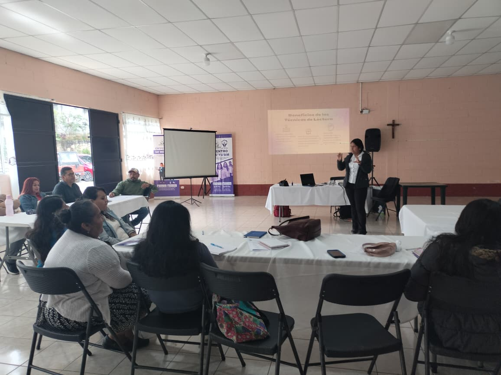
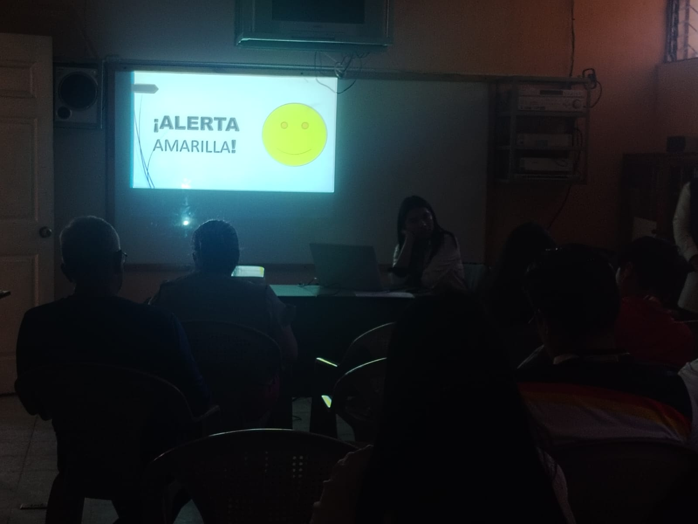
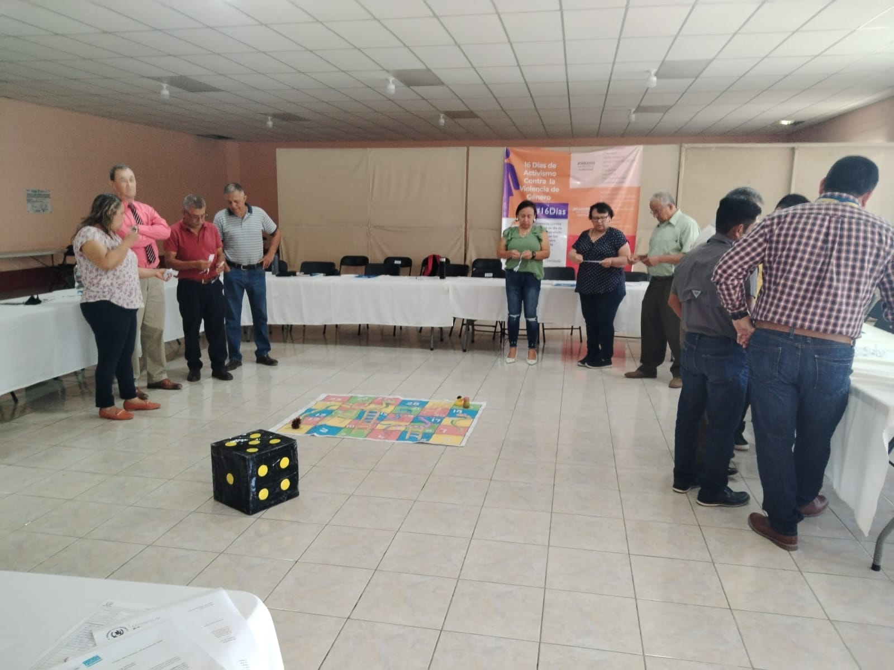
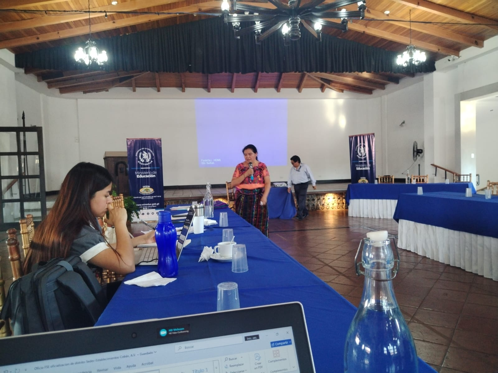


Actividades culturales
Participación en actividades que promueven el intercambio y la diversidad cultural.


Organización comunitaria
Acciones de organización y coordinación con la comunidad educativa.


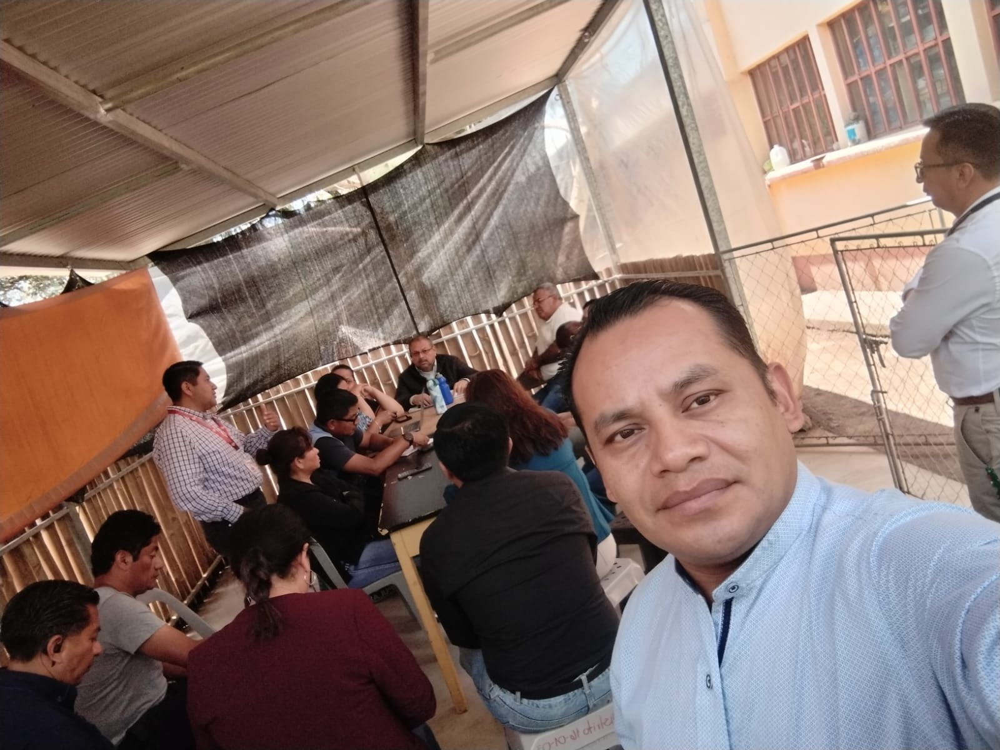
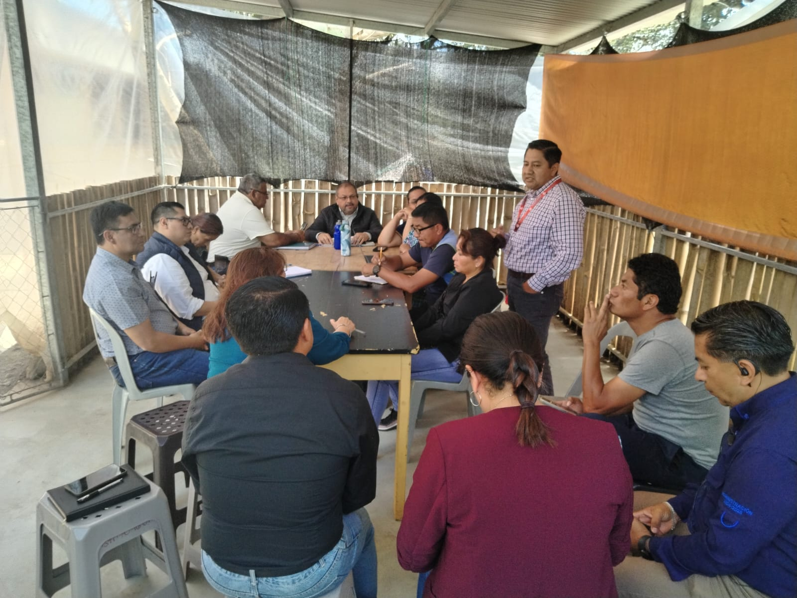
Reuniones de coordinación
Espacios de trabajo con directivos, docentes y autoridades educativas.

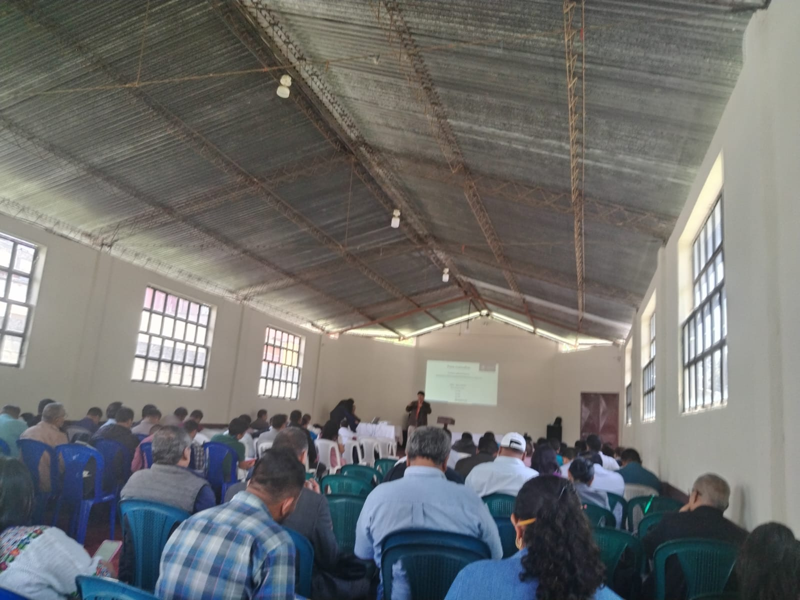
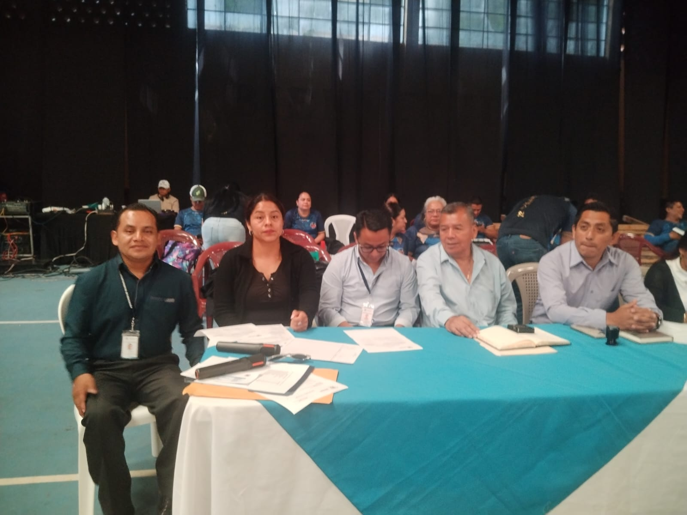
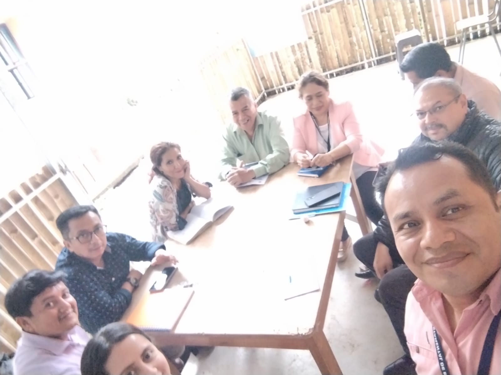
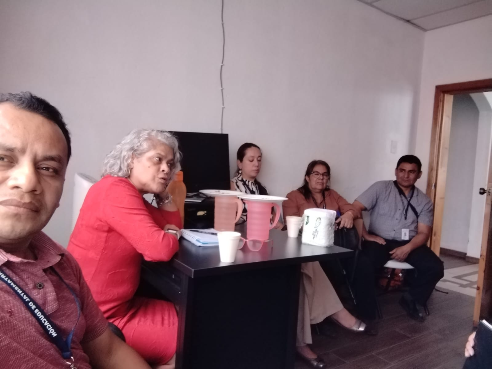
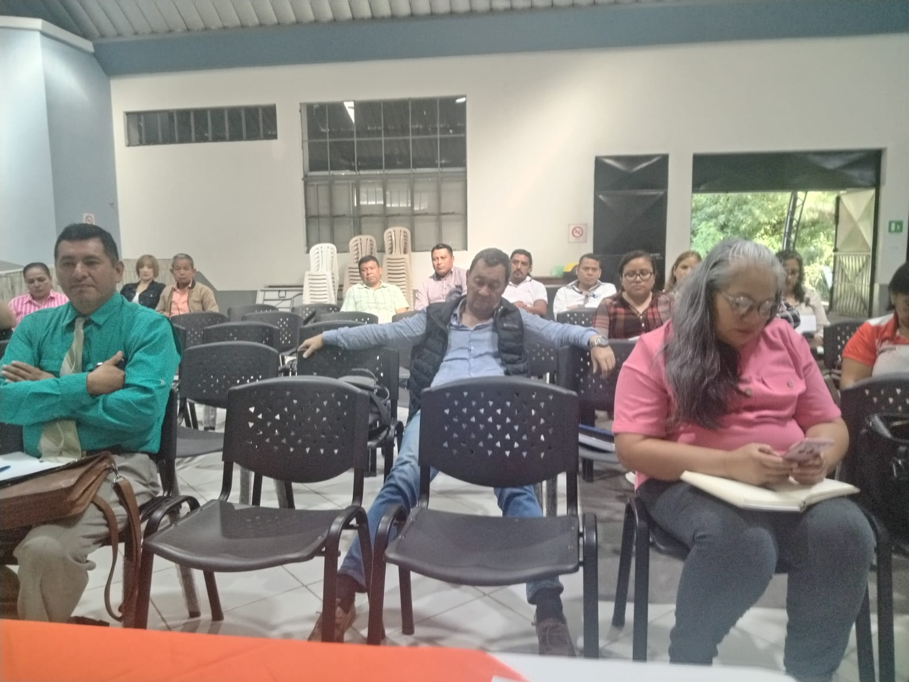
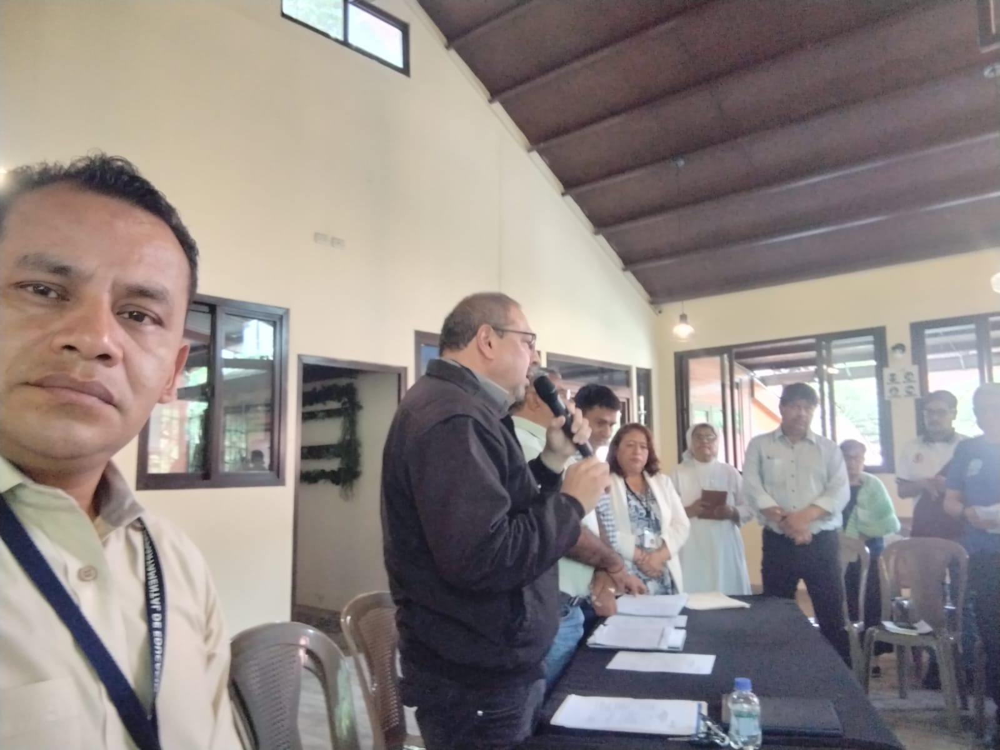
Juegos magisteriales
Competencias para fomentar la convivencia y la participación docente.
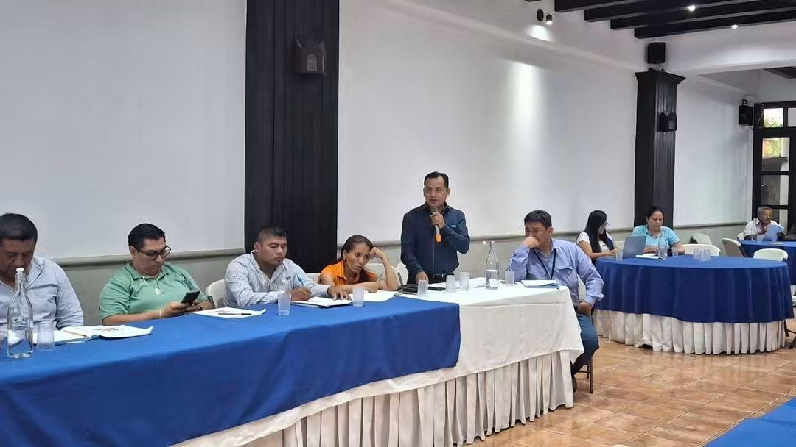